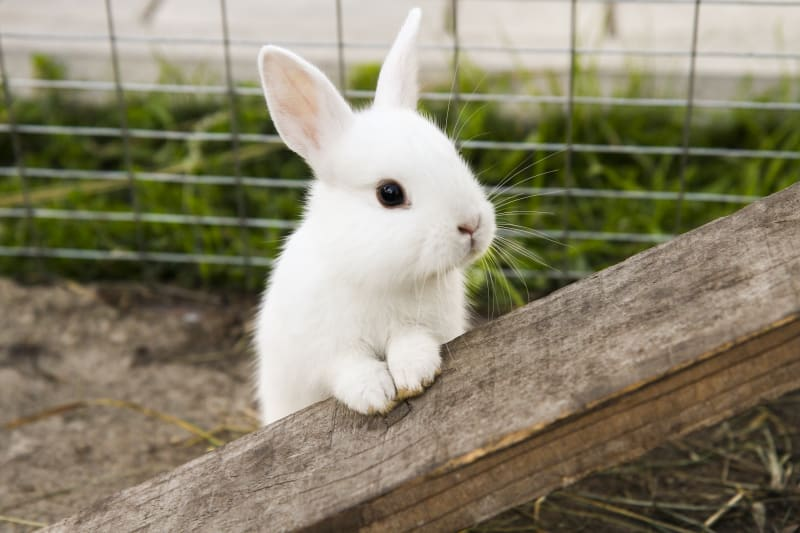

Rabbit
Small herbivores with strong hind legs and long ears.
- Species: Oryctolagus cuniculus
- Diet: Herbivore
- Size: 12-20 inches long
- Weight: 2-11 lbs
- Life span: 8-12 years
- Habitat: Meadows, woods, grasslands
- Found: Worldwide
- Can be pet: Yes
Trivia: Rabbits have nearly 360-degree vision to watch for predators.